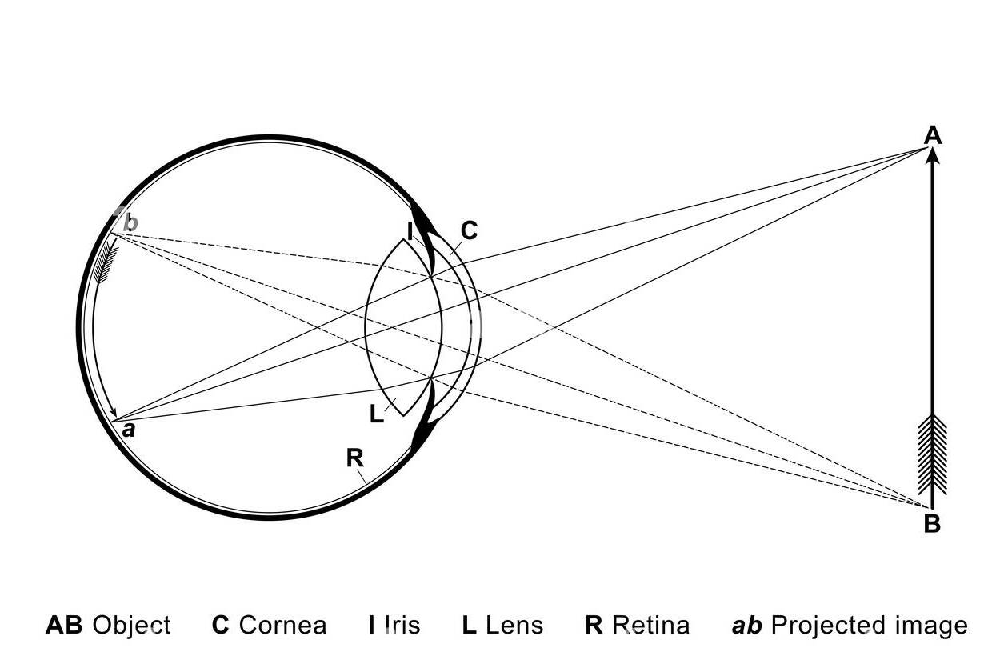

Hello, beautiful people of the internet! I am Burzum, a goofy nerd on the internet. In my blog I wanted to delve into
how video games, or computers in general, simulate our perception, using technologies such as:
perspective projections, texture mapping, shading models (like gourard), raytracing and whatnot.
Initially though, it will mostly about rasterization.
What to expect?
For now, some incomplete but original explanations of the theoretical and mathematical foundations of computer graphics.
I try to relate to how the mathematical model is built and our vision to not stay so abstract.
The blog is still incomplete, but it is being updated actively. So don't forget to check it out frequently!
Starts out a little more mathematically friendly but then gets a little complicated as I try to get to mathematical root of the technology.
Don't be intimitated though! If you don't have a huge mathematical background, it is fine. I will try to be as
direct as possible, and something I want to say: don't get scared by notation. What I explain actually vanishes to nothing more than division and multiplication.
There are some possible confusing constructions like matrices here and there (actually everywhere lol) but behind all that fancy stuff, the idea is SIMPLE.
It just builds around that very simple idea to eventually make it complex.
if you are interested (I can't think of a reason tbh but...) in visiting my old and embarassing attempt: link
It is fun to look at I guess so I left it there.

Introduction
The human vision works roughly as follows: light coming from an object is projected on the curvature
of the back of the eye, and our brain flips it and accounts for the curvature,
making it flat (mostly). This in fact, is equivalent to perspective projection.
There are other type of projections (orthogonal for example), which be later discuessed (WIP?).
Perspective projection is a type of transformation.
A transformation is esentially a change done to a point, with a specific geometrical operation in mind.
For example consider the point: $$P = (2, 3)$$
We can translate, or move this point to the left: \(P' = (0, 3)\)
And therefore, we transformed it, we have obtained a point from another by doing something to it, in this case translation.
Perspective projection is esentially the same thing.
We take a point and transform it so that it is projected on something, in our case it will be a plane.
This I think is the most introductory phrase to the conventional real-time rendering methods. Points projecting onto a plane.
But to sake of simplicity, let's start with \(R^2\), 2 dimensions. The 2D analogue of a plane is a line.
Matrices
"Points projecting onto a plane", we said; but how? The answer is with matrices. Just look above.
A matrix is a 2 dimensional collection of numbers, and can be -and are used to transform points.
For example: $$P = I_2 \cdot P$$
where \(I_2\) is the 2 dimensional identity matrix:
$$ I_2 = \begin{bmatrix} 1 & 0 \\ 0 & 1 \end{bmatrix} $$
Why matrices? Your GPU is very good at parallelization.
Let's say we are multiplying a 3x3 matrix with a 1x3 column matrix, we need 3 entries for the resultant column matrix,
which are entirely independent of each other. Esentially, we need 3 dot independent products, which is just repetitive addition; relatively simple in terms of computation.
Another reason is integrity: for every point if we can find a transformation matrix, we will just multiply every point with
the same matrix, no questions asked! You can start to understand why it is advantagous to use matrices.
Above, you see a homogenous point being transformed via a 3x3 matrix.
2 dimensional points can't be projectively transformed with 2x2 matrices,
as projective transformations aren't affine transformations: they don't preserve distances!
We will use what is called homogenous coordinates.
Projective geometry
Projective geometry is a very abstract field of geometry that needs rigorous understanding.
I will absolutely not get into the details of it (and I mostly can't 😿), however we will borrow the coordinate system that is associated with it:
As said, homogenous coordinates. Why not cartesian coordinates? Well, let me repeat; as stated, cartesian coordinates cannot be projectively transformed
via matrices. But how can homogenous coordinates can be used to achieve this? Let's see.
A projective plane \( \mathbb{P}^2 \) is a set of equivalence relations defined as follows:
$$P_0 \sim \lambda \cdot P_1, \ \lambda \ne 0$$
Which are "points" on that projective plane.
What does this fancy stuff actually mean?
It means, roughly speaking, each projective line (euclidean lines going through the origin) is a "point" on this projective space.
For reference, consider the homogenous coordinate \(x\):
$$
P = [1: 1: 2] \equiv [2: 2: 4] \equiv [4: 4: 8]
$$
In general:
$$ [x: y: w] \equiv [\lambda x: \lambda y: \lambda w], \lambda \in F_{\mathbb{P}^2} $$
And a corresponding cartesian coordinate can be obtained via the operation:
$$ P_{\mathbb{R}^2} = \bigg(\frac{x}{w}, \frac{y}{w}\bigg) \equiv [x: y: w] \cdot \frac{1}{w} $$
Let's say I want to project any point \(P \) onto the line \(x = d \):
It is not hard to see that the projected point \(P'\) will have \(d\) as its \(x\) coordinate, since it will be on the line:
$$P' = \begin{bmatrix} d \\ P_y'\end{bmatrix}$$
Meaning
$$P' = \frac{d \cdot P}{P_x} $$ where:
$$ P = \begin{bmatrix} P_x \\ P_y\end{bmatrix} $$
Looks familiar? 😃
$$ P' \equiv [P_x: P_y: \frac{1}{d}P_x] $$
Augmenting \(P\) to homogenous coordinates:
$$
P' = H \cdot P
$$
Precisely:
$$
P' = \begin{bmatrix} 1 & 0 & 0 \\ 0 & 1 & 0 \\ \frac{1}{d} & 0 & 0 \end{bmatrix} \cdot P
$$
where \(H\) is the homography matrix.
This is a projective transformation.
Back to 3D
The homography matrix for 3D is very similar, assuming we are projecting points onto
the viewport: \( z = 1 \), which is a plane.
The operations are really similar, to project a point \( P \), onto the plane, parallel
to the xy plane and with distance d to the origin, z = d, we multiply it with
the homography (matrix):
$$ H = \begin{bmatrix} 1 & 0 & 0 & 0 \\ 0 & 1 & 0 & 0 \\ 0& 0 & 1 & 0 \\ 0 & 0 & \frac{1}{d} & 0 \end{bmatrix}$$
Affine transformations
Let's try to talk about affine transformations a little.
An import distinction we would be very happy to make is that projective transformations are not affine transformations.
An affine transformation is a transformation where distance ratios and parallelism are preserved.
For example say you translate a rectangle by 2 points to the left,
the lines that were parallel before the transformation are still parallel, the distance of the sides
are still the same, therefore this is an affine transformation.
More mathematically, if a transformation \(f\) is an affine transformation in \(\mathbb{R}^n\) then:
$$
f : P \to \mathbf{M_{n \times n}} \ \cdot P + \vec{v}
$$
For example translation is an affine transformation:
$$
T(P, \vec{v}) = I_n \cdot P + \vec{v}
$$
Where \(I_n\) is the \(n\) th dimensional identity matrix.
Lines and Their Projections
We all know what lines are, right? 😃
The most friendly and perhaps common way of modeling a line is through the equation:
$$ mx + c = y $$
Most of the time though, in computer graphics, we will want to track some attributes of points
on a line, so it is very useful to think a line as the expression:
$$ \vec{P_0} + \alpha\hat{u} $$
Where \(\hat{u}\) is a unit vector in the direction of the line.
So for example the line \(y=x\) is can be written as \(\ell(\alpha) = \vec{0} + \alpha \langle \frac{1}{\sqrt{2}}, \frac{1}{\sqrt{2}} \rangle\).
Let's say go back to our 2D observer sitting at the origin, with a viewport at \(x = 1\),
we want to (perspective) project the line \(y = f(x)\), on his viewport.
This is merely projecting a line onto another with a reference point,
which can be called a collineation in projective geometry.
It is a bijection from the set of all the points that make up the line \(f(x)\) onto the points
on the viewport of the observer.
Wait, so... what? When we project a line onto another, the projection is another line? Indeed it is, and let's prove it.
In our special case, the transformation is:
$$ [x: f(x): w] \mapsto [x: f(x): w\cdot x] \equiv [1: \frac{f(x)}{x}: w] $$
We know that \(f(x)\) is of form: \(mx + c\) so:
$$ \frac{f(x)}{x} = m + \frac{c}{x}$$
and the final form \([1: m + \frac{c}{x}: w]\) is obviously another line.
$$ \bar{x} = \frac{1}{x} $$
$$ \bar{f}(\bar{x}) = m + \bar{x}c$$
But an important fact we must notice that \(\bar{f}(x)\) (not \(\bar{f}(\bar{x})\)) is a hyperbolic function.
It esentially means that a change in \(x\) does not equal to linear change in \(\bar{f}(x)\) like it does in \(f(x)\):
$$ f(x + \delta x) - f(x) = m\delta x \ne \delta \bar{f}(x)$$
This is an important fact, that is actually the core reason of perspective-correct texturing.
Let us go back to our vector-like definition of a line:
$$ \ell(\alpha) = \vec{P} + \alpha\hat{u} $$
Let's try to project this abstract definition of a line into our 1D viewport \(x = 1\), as this line is
completely vertical; needless to say the projected line will also have the direction \(\hat{u}' = [0 \ \ 1]^T\)
$$ \ell_{proj}(\bar{\alpha}) = \frac{\vec{P}}{x_0} + \bar{\alpha}(\alpha) \begin{bmatrix} 0 \\ 1 \end{bmatrix}$$
$$ = \begin{bmatrix} 1 \\ \frac{y_0}{x_0} + \bar{\alpha}(\alpha) \end{bmatrix}$$
Evidently:
$$ = \begin{bmatrix} 1 \\ \frac{y_0 + \alpha u_y}{x_0 + \alpha u_x} \end{bmatrix} $$
Where \( \hat{u} = \hat{i}\cdot u_x + \hat{j}\cdot u_y\),
$$ \implies \bar{\alpha} = \frac{y_0 + \alpha u_y}{x_0 + \alpha u_x} - \\ \frac{y_0}{x_0} $$
$$
\implies \ell_{proj}(\alpha) =
\frac{\vec{P}}{x_0} + \biggr(\frac{y_0 + \alpha u_y}{x_0 + \alpha u_x} - \\ \frac{y_0}{x_0}\biggr) \begin{bmatrix} 0 \\ 1 \end{bmatrix} \\
$$
$$
= \ell_{proj}(\bar{\alpha}) = \vec{P}' + \bar{\alpha} \begin{bmatrix} 0 \\ 1 \end{bmatrix}
$$
This means that \(\ell_{proj}\) is linear with respect to \(\bar{\alpha}\).
So what did we achieve after all this mathematical rigor?
We found a parameter function we can use to interpolate a projected line on \(x = 1\)!
Why do we care? Texture maps are 2 dimensional, meaning that pixels vary linearly, the texture can
be imagined lying on a plane. That is why I said earlier that it is useful to track an attribute that lies on a line.
As mentioned, texels lie on a line,
considering a plane is just the analogue of a line in 3 dimensions, it can actually be parametrized very similarly:
$$
q(\alpha, \beta, \gamma) = \ell_1(\alpha) + \gamma(\ell_2(\alpha) - \ell_1(\beta)), \ \ \gamma \in [0, 1]
$$
So we actually can find the projected plane (on \(x = 1\) for now) and its pixels:
$$
q_{proj}(\bar{\alpha}, \bar{\beta}, \bar{\gamma}) =
\ell_{1_{proj}}(\bar{\alpha}) + \bar{\gamma}(\ell_{2_{proj}}(\bar{\beta}) - \ell_{2_{proj}}(\bar{\alpha}))
$$
using the parameters above. Polygon primitives are usually triangles or quads, and a more convenient way of representing a surface: barycentric coordinates are
often used instead. We will get on to it later.
Model and View Transformations
When you look up, things on the ground go down. e.g, when you
look at a car, then look up, the car goes down in your sight and now you are looking
at the sky. Look at the top left corner of your screen then look back, these words appeared south-east.
It is because within your view space, they really are south-east.
Shortly and more simply, when you rotate your head, your view space changes.
And your view space is just where everything exactly in front of your head is on the \(z\) axis.
It is just a transformation from one vector space to another:
$$
V \to V'
$$
It is very advantageous to transform world coordinates to view coordinates and then project
the points onto a viewport. The justification is that it is extremely easier to project a point,
say onto a viewport defined as:
$$
z = 1
$$
than to a viewport
$$
z = 2x + y + 5
$$
Which is would actually be the world space equation of your viewport when you rotate your head and then
move a little!
But, no matter what you do, roll, yaw, pitch, move a light year away from your original position,
your viewport is always defined as \(z = 1\) in your view space (assuming you started with \(z=1\)).
Notice that your view space does not only change by your rotating your head, you can also move around,
a.k.a translate. This one's less tricky: wherever you go the position of your head in world space is the
origin of your view space. So a point \(P_{world}\) at world space is at:
$$
P_{world} - x_{head}
$$
Let's formalize the rotation part,
assuming a left-handed coordinate system,
when you are looking at the direction \( \hat{d} \), you have a coordinate system with basis:
$$
\mathcal{B} = \big\{ \hat{b}_1, \ \hat{b}_2, \ \hat{b}_3 \big\}
$$
where:
$$
\hat{b}_3 = \hat{d}
$$
$$
\hat{b}_2 = \hat{d}_{\perp}
$$
$$
\hat{b}_1 = \hat{d}_{\perp} \times \hat{b}_3
$$
relative to the global world space! Transformation to your view is:
$$
P_{view} \mapsto (\hat{b}_1 \cdot P_{world})\hat{b}_1 + (\hat{b}_2 \cdot P_{world})b_2 + (\hat{b}_3 \cdot P_{world})\hat{b}_3
$$
or:
$$
P_{view} = \begin{bmatrix} \hat{b}_1^T \\ \hat{b}_2^T \\ \hat{b}_3^T\end{bmatrix} \cdot P_{world}
$$
$$
= \mathbf{M_{rotation}} \cdot P_{world}
$$
Where \( P_{world}\) is the position vector of the point.
But why? That would be a good question. This is going to be kind of mathematical 😃
Alright so what we are esentially trying to do is a coordinate system transformation, without
taking into the camera's position into account. Let's say we have two bases with the same origin: \(\mathcal{E}\),
the basis of the euclidean space we all know and love \(\mathbb{R}^3\):
$$
\mathcal{E} = \big\{ (1, 0, 0), \ (0, 1, 0), \ (0, 0, 1) \big\}
$$
and another random basis: \(\mathcal{B}\).
Now consider a point \(P_0\) represented in \(\mathcal{E}\):
$$
P_0 = (x_0, y_0, z_0)
$$
The key is to realize that this also equals to:
$$
= \big( \hat{e}_1\cdot P_0, \ \hat{e}_2\cdot P_0, \ \hat{e}_3\cdot P_0 \big)
$$
Meaning that each coordinate is just the dot product of the point's position vector with the respective basis!
We aim to represent it in the \(\mathcal{B}\) basis now:
$$
{P_0}' = \big(\hat{b}_1\cdot P_0, \ \hat{b}_2\cdot P_0, \ \hat{b}_3\cdot P_0 \big)
$$
Because those dot products are
essentially the projections of the vector from the origin to \(P_0\) onto the axis, basis vectors of \(\mathcal{B}\):
This is great, however we still need to take your head's, or the camera's position into account.
Let's try to find a matrix such that:
$$
\mathbf{M_t} (\vec{x}) \cdot \vec{v} = \vec{v} + \vec{x}
$$
so that we can project any point \(P_{world}\) to the viewport of our camera:
$$
P' = \mathbf{M_{proj}} \cdot \mathbf{M_{rotation}} \cdot \mathbf{M_translation} \cdot P_{world}
$$
As we have said in the affine transformations section, translation is an affine transformation;
but not a linear one! So it is going to be a 4x4 matrix.
It is about time once again to augment our vector by a homogenous part, that is we create a homogenous coordinate:
$$
\vec{P} = \begin{bmatrix} x \\ y \\ z \\ 1 \end{bmatrix}
$$
This way we can express non-linear and non-affine transformations via matrix multiplications!
And it is known that matrix multiplication is associative.
Meaning all symbols being matrices:
$$
\mathbf{(AB)C = A(BC)}
$$
And:
$$
\mathbf{A}(\mathbf{B}(\mathbf{C}\mathbf{D})) = (\mathbf{A}\mathbf{B}\mathbf{C})\mathbf{D}
$$
Hopefully the picture is clear:
As we have seen before, the matrix that projects a point onto a plane that is vertical and sits at \(x = d\) is:
$$
\mathbf{M_{proj}} = \begin{bmatrix} 1 & 0 & 0 & 0 \\ 0 & 1 & 0 & 0 \\ 0& 0 & 1 & 0 \\ 0 & 0 & \frac{1}{d} & 0\end{bmatrix}
$$
Now let's get back to finding the translation matrix. It is easier to find it intuitively rather than mathematically, so we will use our intuition for now.
A translated point reads as:
$$
\vec{P}'_t = \begin{bmatrix} x + \delta x \\ y + \delta y \\ z + \delta z \\ 1 \end{bmatrix}
$$
Notice the homogenous part is still \(1\). Considering we will be multiplying the last column of our translation matrix with the homogenous part which is \(1\),
anything in the last column will be added to the respect each row in our position vector!
$$
\vec{P}'_t = \vec{P} \cdot \begin{bmatrix} 1 & 0 & 0 & \delta x \\ 0 & 1 & 0 & \delta y \\ 0 & 0 & 1 & \delta z \\ 0 & 0 & 0 & 1\end{bmatrix}
$$
And there is our translation matrix! We have derived every matrix to obtain our final matrix that orients a point to the viewspace and projects it onto our viewport!
The classic: putting it all together...
So let's say we have a camera at \(\vec{p}\) with axes: \(\hat{b}_1\), \(\hat{b}_2\) and \(\hat{b}_3\) and a viewport sitting at \(z=d\) (in the camera's viewspace) then our projection matrix is:
$$
\mathbf{M}_{proj} \cdot \mathbf{M}_{view} =
\begin{bmatrix} 1 & 0 & 0 & 0 \\ 0 & 1 & 0 & 0 \\ 0& 0 & 1 & 0 \\ 0 & 0 & \frac{1}{d} & 0\end{bmatrix}
\cdot \begin{bmatrix} {\hat{b}_1}_x & {\hat{b}_1}_y & {\hat{b}_1}_z & -x_c \\ {\hat{b}_2}_x & {\hat{b}_2}_y & {\hat{b}_2}_z & -y_c\\ {\hat{b}_3}_x & {\hat{b}_3}_y & {\hat{b}_3}_z & -z_c \\ 0 & 0 & 0 & 1 \end{bmatrix}
$$
I have used the associative property of matrices to evaluate \(\mathbf{M}_{translation} \cdot \mathbf{M}_{rotation}\) to obtain \(\mathbf{M}_{view}\).
The order is crucial. We assume in our view matrix that the homogenous part is \(1\), so it must be multiplied -with the point- before the projection matrix.
The only thing missing is clipping (and viewport transformations) now, which we will delve into shortly after.
But firstly, it is time for one of the most important mathematical aspect of computer graphics.
Planes and their projections
This I think, is one of the most important topics in computer graphics; so it is crucial for you, me and everyone that wants to comprehend computer graphics in detail; to understand.
So let's buckle up and try to understand why texturing is problematic if done without perspectivity in mind.
Almost always, shaders running on your gpu interpolates the primitives: quads, triangles; after they are projected. This is because, as discussed in the lines-and-projections chapter,
lines (segments) project to lines, meaning their interpolated points also correspond to the interpolations of the projected points. Same goes for surfaces.
For example you can project four of the corners of a square and draw lines from each corner and every point inside that projected quadrilateral is also inside the original square!
These points that are inside the polygon and are interpolated are called fragments. They are basically the points on the projected primitives that are not the corners or not on the sides of
the projected polygon. We will discuss this in a future chapter: Rasterization.
Now let's imagine a finite plane that is a square for convenience. You can think of it as a wall segment that needs to be textured, or a small quad primitive of a larger mesh:
$$
q(\alpha, \beta) = C + \alpha \vec{a} + \beta \vec{b}
$$
where
$$
\alpha, \beta \in [0, 1]
$$
If you have problems with this definition, don't worry. Let me explain! \(C\) is the position vector of a corner we have selected on the rectangular finite plane,
and the vectors \(\vec{a}\) and \(\vec{b}\) are vectors that are pointing from \(C\) to neighboring corners. So the \(C\) is the vector that "moves" to the plane and
\(\vec{a}\) and \(\vec{b}\) are basis vectors that move the point across the plane. \(\alpha\), \(\beta\) are just parameters that run independently from 0 to 1. This is esentially interpolating
lines on a rectangular surface: fix \(\alpha\) to a value and vary \(\beta\) and you are interpolating a line on the surface.
For example, \(q(1, 1)\) is the diagonal non-neighboring corner of \(C\), and \(q(0, 0) = C\).
a more common (but ultimately the same) way of defining a surface though, is with the same parameters but with 3 corners (more precisely their position vectors)
instead of the mentioned two basis vectors that are derived from them. Let's label them \(A\), \(B\) and \(C\) which was already there in the equation. It is not hard to see that
$$
\vec{a} = A - C
$$
and
$$
\vec{b} = B - C
$$
Therefore our equation becomes:
$$
q(\alpha, \beta) = C + \alpha (A - C) + \beta (B - C)
$$
$$
= C + \alpha A - \alpha C + \beta B - \beta C
$$
$$
= (1 - \alpha - \beta)C + \alpha A +\beta B
$$
If we let
$$
\gamma = (1 - \alpha - \beta)
$$
Then:
$$
q(\alpha, \beta, \gamma) = \gamma C + \alpha A +\beta B
$$
Becomes the barycentric coordinates parametrization of the surface! (Remember the definition we made in the lines-and-projections chapter?)
A texture is also a 2D rectangular image, a pixel array. What if I wanted to project this texture onto the \(z=1\) plane? We know that the texels (texture pixels)
vary linearly on the plane with respect to the barycentric coordinates \((\alpha, \beta, \gamma)\) but what happens to these parameters when we project the texture onto the plane?
Well, as we have discussed extensively, each texel would divide by its \(z\) coordinate. Where \(z\) is also interpolated with the said parameters:
$$
z = \omega_0 = \gamma C_z + \alpha A_z +\beta B_z
$$
where:
$$
q_{proj}(\alpha, \beta, \gamma) = \begin{bmatrix} q_x \\ q_y \\ q_z \\ \omega_0 \end{bmatrix}
$$
and therefore:
$$
q_{proj}(\alpha, \beta, \gamma) = \frac{\gamma}{w_0} C + \frac{\alpha}{w_0} A + \frac{\beta}{w_0} B
$$
Or just a parameter swap:
$$
q_{proj}(\bar{\alpha}, \bar{\beta}, \bar{\gamma}) = \bar{\gamma} C + \bar{\alpha} A + \bar{\beta} B
$$
where, as we know what \(w_0\) is:
$$
\bar{\alpha} = \frac{\alpha}{w_0} = \frac{\alpha}{(1 - \alpha - \beta) C_z + \alpha A_z +\beta B_z}
$$
And the rest, similarly:
$$
\bar{\beta} = \frac{\beta}{w_0(\alpha, \beta)}
$$
$$
\bar{\gamma} = \frac{1}{w_0(\alpha, \beta)} - \bar{\alpha} - \bar{\beta}
$$
Here we have it! The parameters that we can use to interpolate the projected surface!
This is huge! Why? We can now linearly interpolate attributes on the projected surface!
Let's define a square texture as \(T(u, v)\) where \(u\) and \(v\) are texture coordinates. And label one corner \(T_0\) as the local origin, and other adjacent corners \(T_1\) and \(T_2\)
We already know the projected texture on \(z = d\) (generalizing):
$$
T_{proj}(u, v) = \bigg(\frac{1}{w_0} - \frac{u}{w_0} - \frac{v}{w_0}\bigg) T_0 + \frac{u}{w_0} T_1 + \frac{v}{w_0} T_2
$$
Where \(w_0\) is:
$$
w_0 = \frac{1}{d} \cdot z = \frac{(1 - u - v) {T_0}_z + u {T_1}_z + v {T_2}_z}{d}
$$
When we are interpolating across the projected texture with \(\bar{u}\) and \(\bar{v}\) if we multiply the
them with:
$$
\bigg(\frac{(1 - u - v) {T_0}_z + u {T_1}_z + v {T_2}_z}{d}\bigg)^{-1} = \frac{1}{\omega_0}
$$
then we get back the corresponding parameters used to interpolate the "unprojected" texture and therefore the corresponding texel: \(T(u, v)\)! Neat huh? Every shader does this to find the original parameters or coordinates on the projected primitive
to recover the "unprojected" attributes, like: texel coordinates, rgb values (e.g if you are interpolating RGB colors), surface normals etc.
Clipping
Consider yourself looking at your screen right now. Do you see everything and anything around you, even if they are not obstructed by an object? Do you see your back?
Do you see anything that is behind you? Assuming you are a human being with normal eyes, you don't. The reason you don't is because certain light coming from certain
directions, angles don't reach your eye. The light that bounces from an object behind you (and is coming towards your eye), or that is completely above you, hits your head
and since your head is not transparent, it is absorbed reflected et cetera. Ok, enough of making common sense sounding like a physics lecture. The simple idea is that you have a field of view in
two axes: \(x\) and \(y\). Of course as long as we assume the mentioned fictional eye space of at the center of your head, where you always look at the \(z+\) direction.
This creates an infinitely long pyramid where the top your vanishing point, or perspective point or "the eye".
"The far plane"
Ok, we have fields of view in two dimensions, but what about \(z\)? Well, we can see any light as long as it is coming towards our eye within the constraints of our
\(x\) \(y\) FOV's. Any light, including the faint starlight from the young stars that are dead now, from billions of years ago, we can see them as long as it reaches or eye!
But... We are working with computers here, and they are terrible with the notion of infinity. I can't let my renderer draw everything indefinitely, that is in my FOV, if I am making an open world game for example.
It would generate a enormous amount of computational constraints and performance issues. If you have played minecraft before, you'd get it right away! Minecraft worlds are infinite:
imagine looking from a viewpoint in minecraft so high up there is little that obstruct your view. What would you see? Minecraft worlds are flat, so no; there wouldn't be a horizon. Say goodbye to your PC,
as it shrieks in pain while trying to render chunks as far away as the andromeda galaxy.
What we need is a threshold that we use to not render something if they are too far away, so we introduce another constraint: a "far plane" as it is conventionally called. This along with our
viewport or the "near plane" makes up a frustrum (of a pyramid). Anything that is outside this frustrum is ignored or "clipped".
 This is great, however we still need to take your head's, or the camera's position into account.
Let's try to find a matrix such that:
$$
\mathbf{M_t} (\vec{x}) \cdot \vec{v} = \vec{v} + \vec{x}
$$
so that we can project any point \(P_{world}\) to the viewport of our camera:
$$
P' = \mathbf{M_{proj}} \cdot \mathbf{M_{rotation}} \cdot \mathbf{M_translation} \cdot P_{world}
$$
As we have said in the affine transformations section, translation is an affine transformation;
but not a linear one! So it is going to be a 4x4 matrix.
This is great, however we still need to take your head's, or the camera's position into account.
Let's try to find a matrix such that:
$$
\mathbf{M_t} (\vec{x}) \cdot \vec{v} = \vec{v} + \vec{x}
$$
so that we can project any point \(P_{world}\) to the viewport of our camera:
$$
P' = \mathbf{M_{proj}} \cdot \mathbf{M_{rotation}} \cdot \mathbf{M_translation} \cdot P_{world}
$$
As we have said in the affine transformations section, translation is an affine transformation;
but not a linear one! So it is going to be a 4x4 matrix.